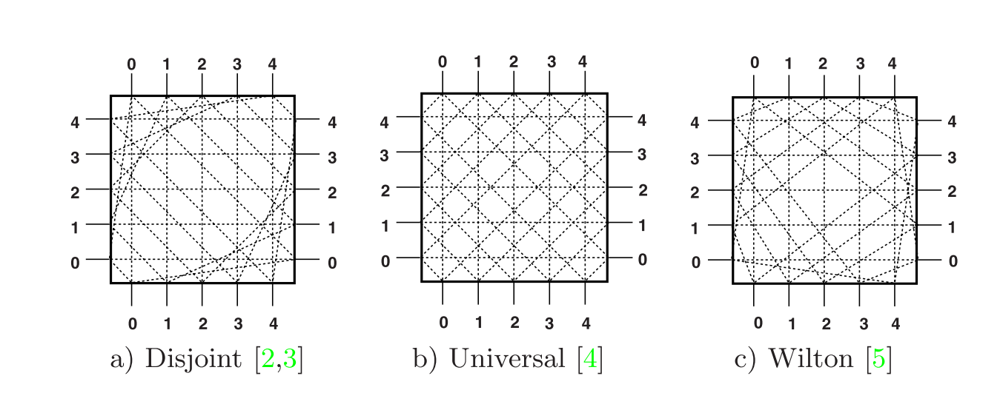
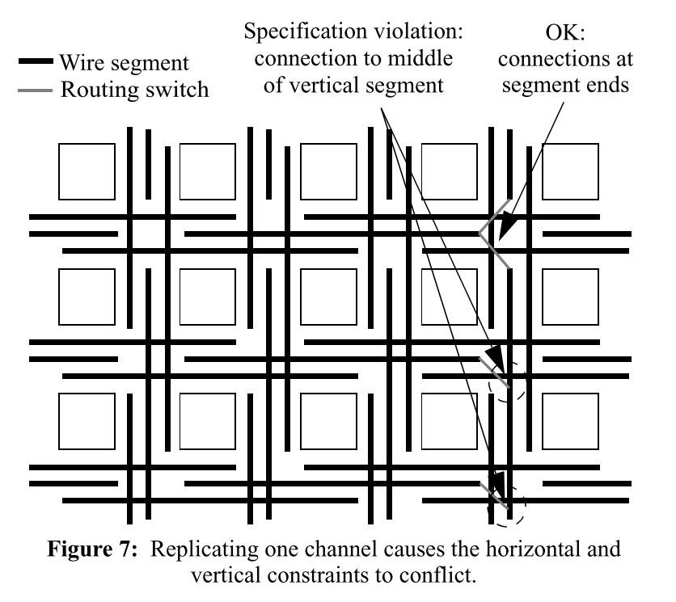
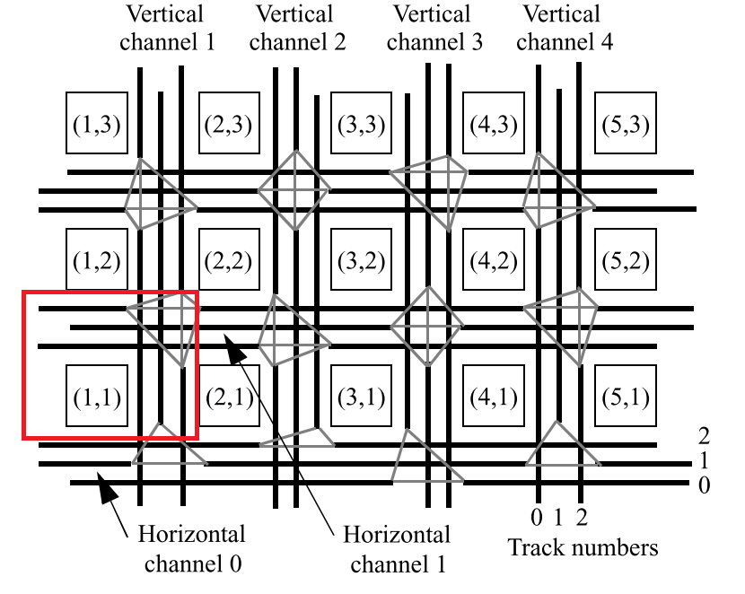
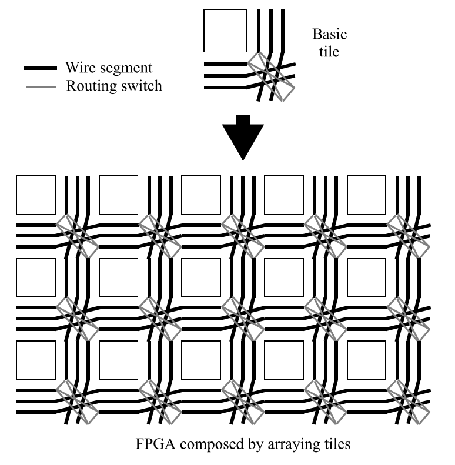
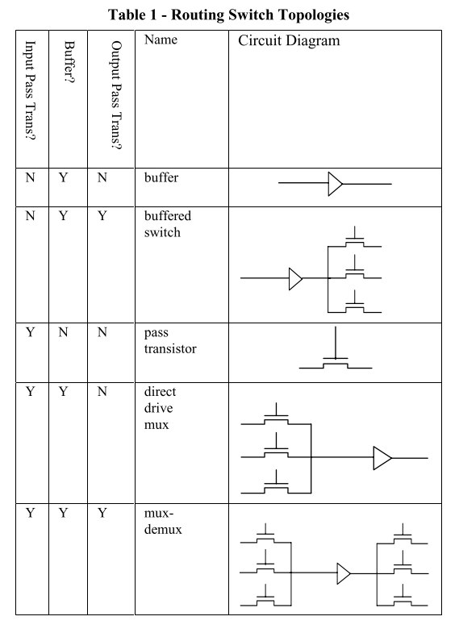

FPGA Routing Architecture Between Tiles
基本结构 — $Island$
$Switch Block$
目前通用的几种交换块结构为：$Universal, Disjoint, Wil$

$Disjoint$类型会导致路由线路被限制在同一类型轨道内，如在该图中0通道输入仅能连接到0轨道输出，因此任何由$CLB$导入0轨道的信号都不能通过其他轨道路由，而$Universal$和$Wilton$型则属于全连接类型，且其$Top$结构仅需更少的布线轨道和晶体管来实现。
描述参数
- $k$ $LUT$输入 $3 to 7 inputs$
- $N$ $Cluster$ 中 $LUT$ 数量 $1 to 10 LUTs$
$I$ $CLB$输入 $4 to 40 inputs$
$W $ 通道宽度，表示每个通道中的track数 $10 to 60 tracks$
- $F_s$ 交换块灵活度$(Flexibility of Swtich Block)$ 表示发生在开关块中轨道上的可编程连接的数量
- $F_{c_{in}}$ 连接块灵活度$(Flexibility of ConnectionBlock)$表示$CLB$ 输入可连接的轨道数与总轨道数之比 $0.1 to 1.0$
- $F_{c_{out}} $ 连接块灵活度$(Flexibility of ConnectionBlock)$表示$CLB$ 输出可连接的轨道数与总轨道数之比 $0.1 to 1.0$
物理层部署

对于$F_s = 3$的交换块，其任意输入都有三个潜在的连接对象；同理，任意输出都有三个潜在的输入连接对象。因此如左图所示的交换快Top结构可具体为右图中的多路选择器，其晶体管级实现根据具体情况决定。
$TOP$实现
$Single Drive Routing$

在$Single Drive Routing$结构中，可编程性是通过在驱动器的输入上使用多路复用器来实现的，每个布线轨道都只有一个物理驱动器，这种对单个驱动器的限制意味着逻辑块输出只能连接到其驱动器与逻辑块相邻的布线轨道，以避免与相邻逻辑集群的布线过长。典型的单驱动器布线架构将驱动器放置在布线的一端而不是中间，每根线只能在特定方向发送信号。
目前，$Altera$及$Xilinx$最近推出的所有$FPGA$设备都特定使用单驱动器路由架构。
基于定长路由线$tile$的$fabric$生成
通常构建$fabric$需要根据每个$tile$的具体连接情况单独指定其开关块和连接块。如果只是简单的对每个$tile$进行路由通路复制，则会出现如下图所示的问题——部分$CLB$输出引脚无法通过路由轨道驱动部分其他$CLB$的输入引脚：

造成该问题的原因，是在$Routing$中采用的$Segment$无法在中端加入开关——否则实际布线时就会编程两根较短导线，而单纯的重复相同$tile$的布局无法针对该路由结构的情况进行针对性调整。
可通过规律性调整路由线起点解决该问题。

如上图所示的$fabric$结构，将每个tile对应的水平路由轨道从下到上分别命名为$Channel0-2$，垂直路由轨道从左到右分别命名为$Channel0-2$；首先考虑水平$Channel$，对于轨道0中$track0$线段的左端与满足如下条件的逻辑块对齐：
其中$ i $是逻辑块的水平(x)坐标。则对于轨道1中$track0$线段的左端与满足如下条件的逻辑块对齐：
对于其他编号的$track$的起点则要求顺序后移——随$Channel$编号增加方向；
垂直方向通道判断$Segment$起点方法公式与水平通道相同(编号规则不改变)，且执行类似的起点后移——通道$i+1$中每个$Segment$起点相对于通道i中的起点向后移动一个$CLB$。

再更改其$Top$结构，使其每个$Tile$路由结构相同，便于复制生成目标大小的$fabric$。
$Detailed Routing Architecture$
影响FPGA整体性能的一个主要因素是路由开关的选择，路由开关可由输入复用传输晶体管、缓冲器和输出解复用晶体管的任意组合进行建模。其组合中在电气上可行的5中结构如下表所示：

- 缓冲器
- 缓冲器和输出传输晶体管
- 传输晶体管
- 直接驱动多路复用器
- 带缓冲器的传输晶体管多路复用器和输出多路复用器
缓冲器没有任何执行可编程路由的能力，但可能部署在架构中的不同位置以重新为信号供电。
在本论文中，尝试使用不同线长占比的$Routing$结构对同一基准电路进行布线，并检测其消耗资源情况，如下图显示对包含$50\%Segment$长度4和$50\%Segment$长度16，以及$50\%Segment$长度4和$50\%Segment$长度8两种布线结构使用直接驱动$(Direct Routing)$的效果。其基本架构在两种布线结构中都使用了$50\%$的传输晶体管和$50\%$的缓冲开关。

在实验中，$fabric$路由面积随着直接驱动开关的使用而单调减小。

$4/8$架构所需的通道宽度大致恒定，而由于单个驱动点对$Segement$为16的导线形成了更严格的布线约束，因此$4/16$架构对应的通道宽度有所增加。

尽管$4/8$结构导致通道宽度增加，但总布线面积回随着布线多路复用器输入上的小晶体管替换宽布线晶体管而减少。因此如上图所示，在两种现场组合中的任何一种中，$100\%$直接驱动多路复用器都会形成速度最快和面积最小的$fabric$。